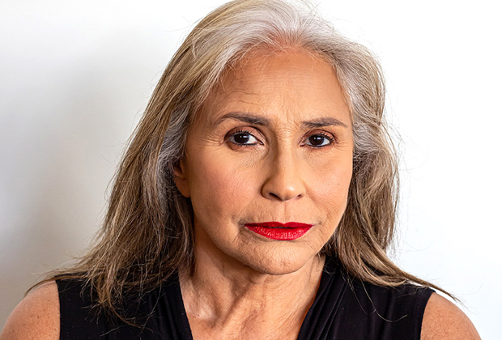

Uma iniciativa dedicada à arrecadação de recursos para contribuir com os Objetivos de Desenvolvimento Sustentável (ODS) da ONU, especificamente os ODS 1, 2 e 10.
Nosso objetivo
Mãos Solidárias é um projeto que visa oferecer apoio financeiro direto às famílias carentes, atendendo às suas necessidades básicas de alimentação e moradia. Além disso, buscamos implementar soluções sustentáveis para garantir acesso contínuo e digno aos recursos necessários. Nosso objetivo é criar um impacto positivo e tangível, combatendo a pobreza, a fome e as disparidades sociais.
Atendimento às necessidades básicas: através de uma rede de apoio financeiro, buscamos garantir condições mínimas de subsistência para quem mais precisa.
Soluções sustentáveis: além de suprir necessidades imediatas, oferecemos programas de capacitação, projetos agrícolas e acesso a serviços de saúde básicos.
Transparência em foco
Comprometemo-nos com a transparência e a prestação de contas aos nossos doadores. Para isso, informados regularmente sobre o impacto das contribuições, fornecendo relatórios detalhados sobre como as doações estão sendo utilizadas e os benefícios concretos que estão sendo gerados para as famílias necessitadas. Essa abordagem visa fortalecer a confiança e garantir que cada doação faça uma diferença genuína e significativa nas comunidades que apoiamos.
Isso não apenas fortalece a confiança de nossos doadores, mas também promove uma cultura de transparência e colaboração em todas as etapas do projeto. Com a transparência como nosso guia, estamos construindo um futuro mais promissor e solidário.
Vidas transformadas
Carla Perez
Carla Perez, jovem brilhante, realizou seu sonho de seguir carreira na dança após participar de oficinas artísticas sediadas em eventos do projeto.
José Sarney
José Sarney, imigrante do Zimbábue (África), encontrou esperança ao participar de workshops sobre empreendedorismo no projeto Mãos Solidárias.
Fafá de Belém
Fafá de Belém, ex-moradora de rua e viciada, adquiriu meios para começar uma marmitaria com doações recebidas através do projeto.

Como participar do projeto
Ajudar pessoas necessitadas é um dos pilares para a construção de um mundo mais justo e solidário. Cada ato de generosidade e compaixão não só alivia o sofrimento imediato, mas também cria um ciclo de bondade que se espalha através das comunidades, inspirando outros a se unirem em prol do bem comum. No projeto "Mãos Solidárias", buscamos não apenas fornecer assistência material, como alimentação, moradia e acesso a serviços básicos, mas também promover uma cultura de empatia e cuidado mútuo.
Você pode se engajar conosco de diversas maneiras. Além de contribuir financeiramente, com doações únicas ou recorrentes, você pode também se tornar um voluntário, dedicando seu tempo e habilidades para apoiar as atividades do projeto. Seja participando de eventos de arrecadação de fundos, compartilhando suas habilidades profissionais ou simplesmente oferecendo apoio emocional, cada contribuição é valiosa e faz a diferença na vida daqueles que mais precisam.
Para tornar sua doação ainda mais acessível, oferecemos opções de pagamento convenientes, como Pix, depósito bancário ou doação por cartão de crédito. Seja qual for o valor ou a forma de contribuição, cada doação é um investimento no futuro, uma semente de esperança plantada para um mundo mais justo e acolhedor para todos. Junte-se a nós nessa jornada de solidariedade e transformação, onde cada gesto de bondade conta e faz a diferença.
Os Objetivos de Desenvolvimento Sustentável (ODS) representam um apelo universal da Organização das Nações Unidas à ação para erradicar a pobreza, proteger o planeta e garantir que todas as pessoas desfrutem de paz e prosperidade.
Estes 17 objetivos, construídos sobre os sucessos do desenvolvimento do Milênio, abrangem uma ampla gama de áreas, incluindo questões emergentes como mudança climática, desigualdade econômica, inovação, consumo sustentável, paz e justiça, entre outras prioridades. O caráter interconectado desses objetivos é notável – o progresso em um muitas vezes depende da abordagem eficaz de questões relacionadas a outros.